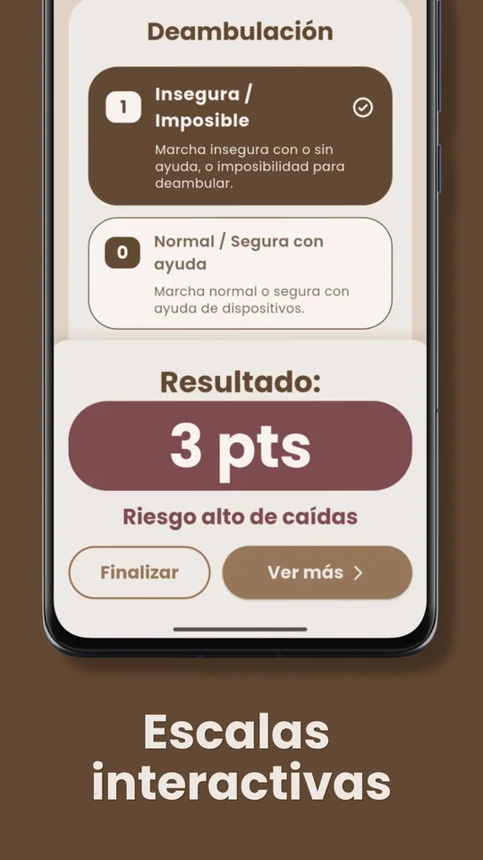
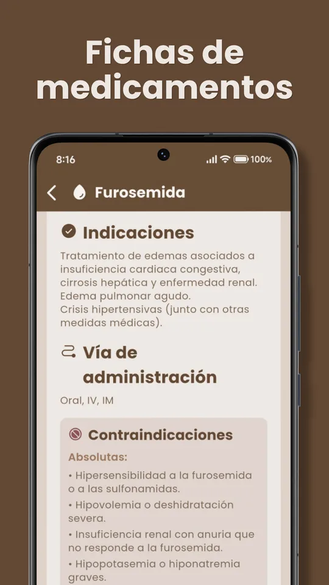
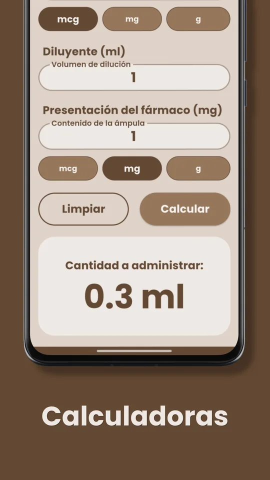
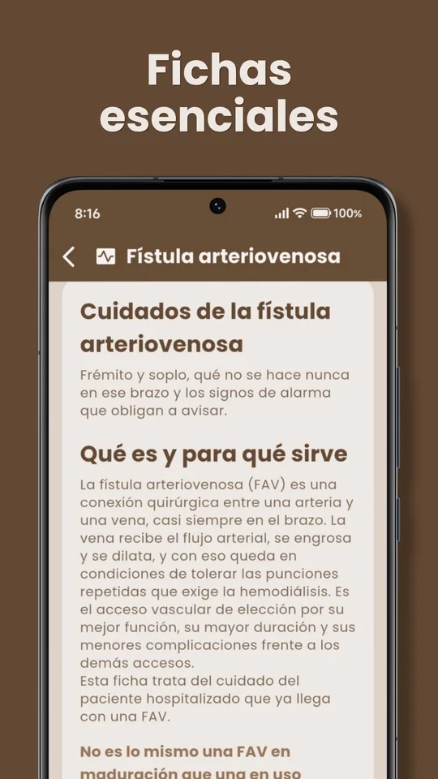

- Consciencia y sedación
- Glasgow, Ramsay, RASS
- Valoración de riesgos
- Braden, Downton, Maddox
- Emergencias y triaje
- MEWS, qSOFA, índice de shock
- Dolor
- EVNA, PAINAD, DN4
- Pediátricas y neonatales
- APGAR, Silverman-Anderson, FLACC
Lo que trae dentro
El contenido tal como aparece en la app, pensado para consultarse en segundos durante el turno.
- Grupos
- Analgésicos, antibióticos, anticoagulantes, antiinflamatorios, antihipertensivos, diuréticos, antieméticos, broncodilatadores, protectores gástricos e insulinas
- Cada ficha
- Indicaciones, contraindicaciones, vía de administración, farmacocinética, farmacodinamia, efectos adversos, interacciones, administración y precauciones
- Alto riesgo
- Marca visible en los fármacos que la requieren
- Dosis
- Regla de tres, con conversor entre mcg, mg y g
- Goteo intravenoso
- En horas o minutos
- Presión arterial media
- PAM a partir de sistólica y diastólica
- Soluciones glucosadas
- Por dilución o mezcla de dos soluciones
- Pérdidas insensibles
- Para el balance de líquidos
- Insumos
- Orden de llenado de tubos, calibres de catéter periférico, soluciones intravenosas
- Paciente
- Regiones abdominales, toma de presión arterial, fístula arteriovenosa
- Equipo
- Dispositivos de oxígeno, drenajes
- Códigos
- Código azul, Acciones Esenciales para la Seguridad del Paciente, precauciones de aislamiento, hora dorada en neutropenia febril
- NOM-019-SSA3-2013
- Práctica de enfermería en el Sistema Nacional de Salud
- NOM-022-SSA3-2012
- Terapia de infusión intravenosa
- NOM-087-ECOL-SSA1-2002
- Residuos peligrosos biológico-infecciosos
Así se ve
Colores cálidos, letra grande y botones pensados para usarse con una mano.




De dónde sale cada dato
Ningún contenido clínico se publica sin fuente. Este es el orden en que se buscan.
Normas Oficiales Mexicanas
Vigentes y publicadas en el Diario Oficial de la Federación.
Guías y manuales oficiales
Guías de práctica clínica de IMSS, ISSSTE y SSA, y manuales del Consejo de Salubridad General.
Revistas indexadas
Con revisión por pares, preferentemente mexicanas.
Cada ficha cierra con su bibliografía completa. Si una fuente no se pudo verificar, el dato no se publica.
Cómo se instala
Nurska se descarga desde esta página, no desde una tienda. Toma un minuto.
-
Descarga el archivo
El botón baja nurska.apk a la carpeta de Descargas de tu celular.
-
Permite la instalación
Android avisa que la app viene de una fuente desconocida, como con cualquier archivo que no sale de Play. Activa el permiso para tu navegador o tu gestor de archivos.
-
Abre e instala
Confirma y listo. No pide correo, contraseña ni permisos del teléfono.
Para actualizar no hace falta volver aquí: la app avisa cuando hay versión nueva y se instala encima sin perder nada.
Novedades
Cada versión mejora con lo que reportan quienes la usan.
Versión 1.2.130 de agosto de 2026
- Nueva pantalla de actualizaciones en el menú, con verificación manual y las novedades de la versión instalada.
- La calculadora de regla de tres acepta mcg, mg y g también en la presentación del fármaco, y suma una pestaña de conversor entre esas unidades.
- Los campos numéricos de las calculadoras muestran una indicación que ya no desaparece al escribir.
- Los botones de categoría, el tablero de inicio y los resultados de las escalas dejan de quedar debajo de la barra de navegación del sistema.
- El botón atrás minimiza la app al primer intento y ya no deja la pantalla en negro.
- Corrección en la farmacodinamia de ondansetrón: describe el mecanismo de acción sin atarlo a quimioterapia ni radioterapia.
Versiones anteriores
Versión 1.2.029 de agosto de 2026
- Cinco medicamentos nuevos: omeprazol, pantoprazol, metoclopramida, ondansetrón y salbutamol.
- La calculadora de dosis incluye un conversor de unidades y permite elegir mcg, mg o g en ambos campos.
- El goteo IV acepta minutos además de horas.
- Aviso cuando el resultado de una dosis es sospechosamente pequeño, para revisar las unidades seleccionadas.
- Nuevo diseño en las fichas de medicamentos, escalas y calculadoras, con íconos por sección.
Versión 1.1.0
- Nuevo módulo Esenciales: fichas de referencia rápida sobre insumos, paciente, equipo y códigos.
Versión 1.0.0
- Primera versión de Nurska: escalas clínicas, calculadoras, farmacología y normas oficiales, todo sin conexión.
Lleva Nurska a tu turno
Gratis, sin registro y sin conexión. Hecho por enfermería, para enfermería.
Descargar gratis